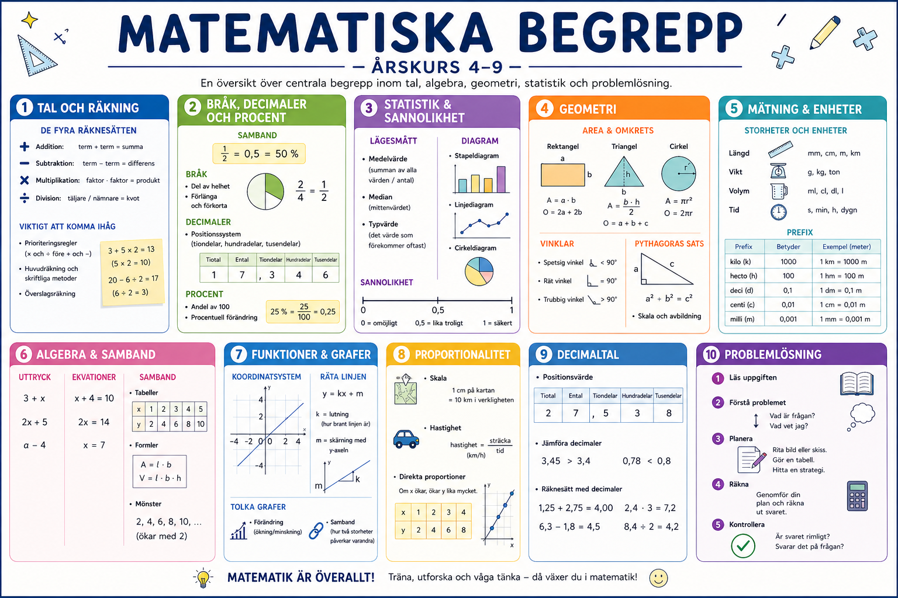

📋 Begreppsöversikt
En översikt över viktiga matematiska begrepp. Klicka på knappen för att spara eller skriva ut som PDF.

Välj ett område för att utforska begrepp, exempel och uppgifter!
Skapad av Maria
En översikt över viktiga matematiska begrepp. Klicka på knappen för att spara eller skriva ut som PDF.
